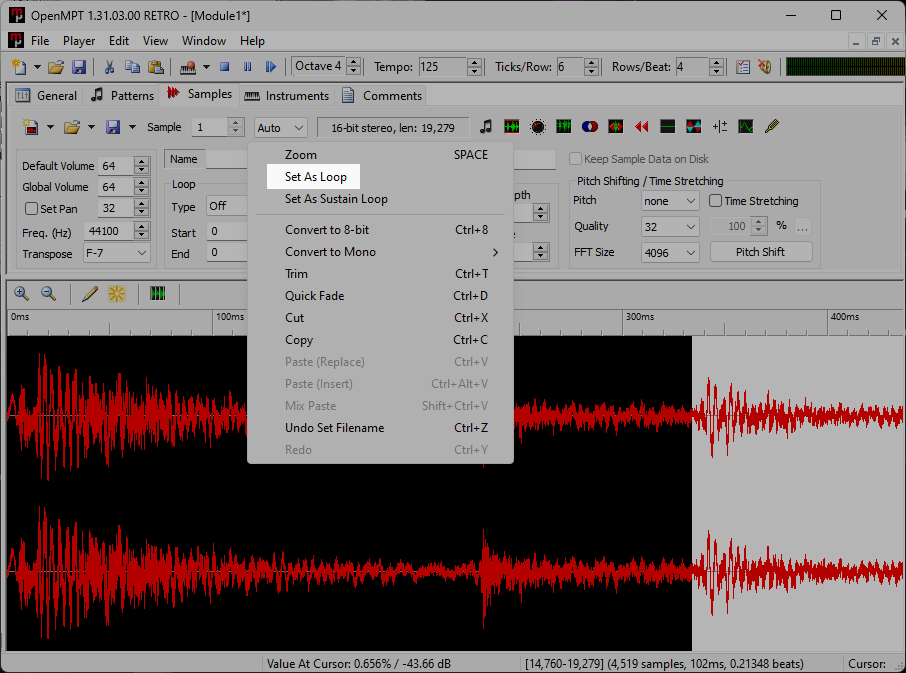
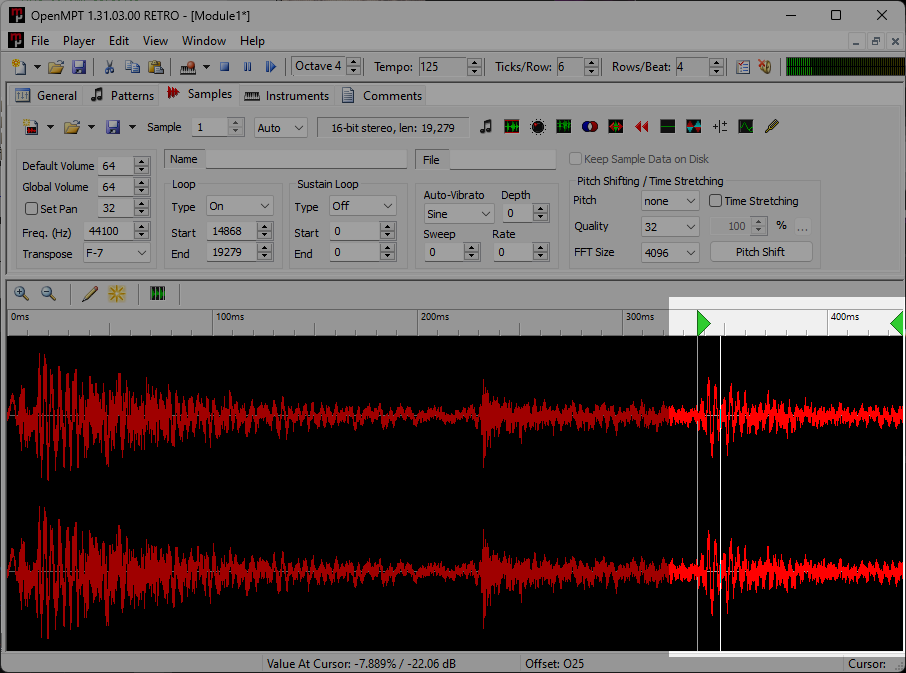
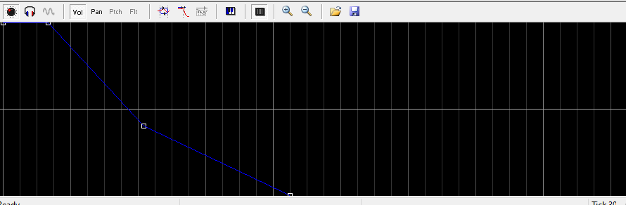

If you want to know how I made the stuff on my music page, I've been using OpenMPT for some time and some of my friends want to know how to use it. This ugly, #fffff spreadsheet is where it starts.
The goal throughout this entry is to not use the plugins rack (but there's no shame in using it. That being said, scroll to the bottom for a list of plugins I use.)
Like all software the toughest part is getting used to the UI and figuring out where everything is. There are many other tracker softwares you can use, but OpenMPT/Modplug is the one I'm most familiar with and you'll find it's a pretty intuitive app.
In my opinion if you're just starting out, you'd probably get better outcomes creating electronic music over traditional music in trackers. While chiptune and jungle modules can have around 20 or even under 10 slots of audio, it's tough to make something like tracker jazz sound believable and "not sampled" unless you record the melodies yourself. Speaking from experience at least. Tracker jazz isn't impossible, but its a novel ambition to do on this type of DAW.
At its core OpenMPT is simply a sound editor, with capabilities in general sound design outside of music. I've formatted plenty SFX loops for a couple of video game collaborations I was on using only four channels and a pattern. Or sometimes I want to format a simple tag for my other works.
It's not that music trackers offer more in terms of features. Not everyone HAS to use a music tracker, and they're even considered obsolete ware to some. However, there's a lot of workflow related differences between the conventional DAW and a music tracker.
These can either be advantages or drawbacks depending on what you need in order to compose.
Open up the "Patterns" tab on a new module. The chart overview window might be a little daunting— it looks more like Microsoft Excel than it does something you'd write music in. Don't think too hard about it.
Each channel is separated by 4 columns: the "
For a better indepth, you can always read the official Manual: Patterns wiki entry.
Open the "Samples" tab and load in the samples you're going to use by clicking the folder icon on the toolbar.
 The sample needs to be reflected in the instruments tab. The black map at the very bottom of the display is where we will control the volume of our sample. Without the volume fade, the loop would just sustain forever until a new note is input on the same channel. And that would just be really annoying.
It's a very small detail that ties the whole thing together. This works around the negative space you get when splicing amen breaks or to blend in an instrument with sustain (padding, chords in general) to keep the track "full-sounding",
This plugin is as barebones as synthesis can get, in a good way. I use this to create every synth and sometimes even the percussions I use. You can quite literally make both a beefy, Phatworld-like bassline on one bank, and a whole ambient library in the other. Would recommend playing around with even outside of MPT.
Download @ www.geocities.jp/daichi1969/softsynth/